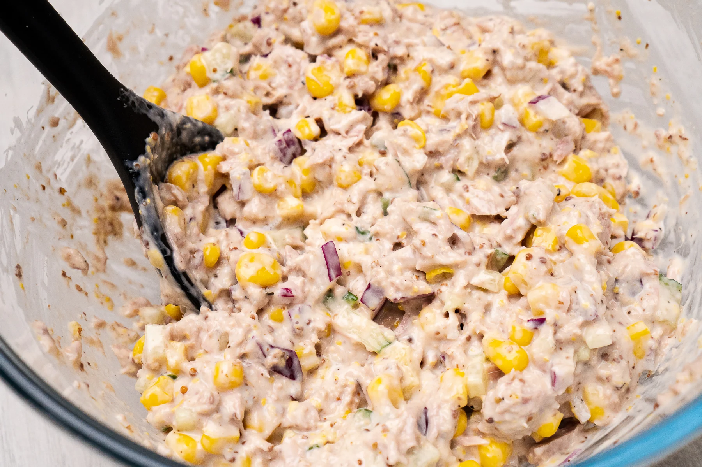
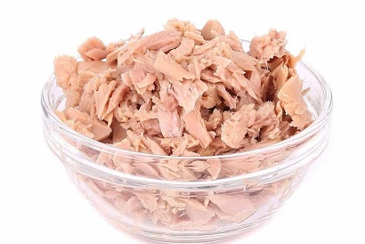
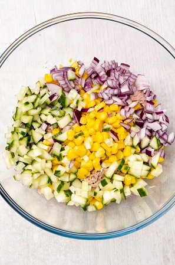
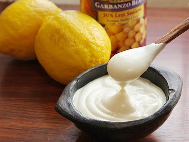
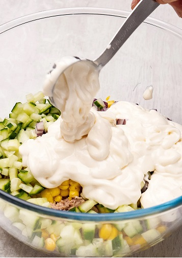
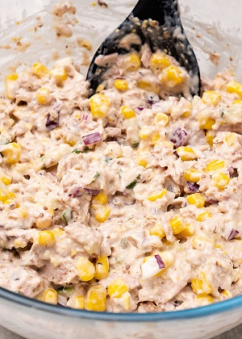
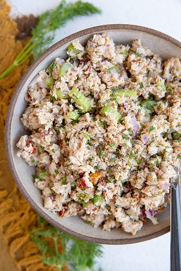

Tuna and Sweetcorn Salad

Ingredients:
- 1 can of tuna
- 1 cup of sweetcorn
- 1/2 cup of diced red onion
- 1/4 cup of diced celery
- 1/4 cup of mayonnaise
- 1 tablespoon of lemon juice
- Salt and pepper to taste
Instructions:
-

Drain the can of tuna and place it in a large mixing bowl.
-

Add the sweetcorn, diced red onion, and diced celery to the bowl with the tuna.
-

In a separate small bowl, mix together the mayonnaise and lemon juice.
-

Pour the mayonnaise mixture over the tuna and vegetables and toss to coat everything evenly.
-

Season with salt and pepper to taste.
-

Chill in the refrigerator for about 30 minutes before serving.